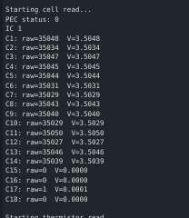
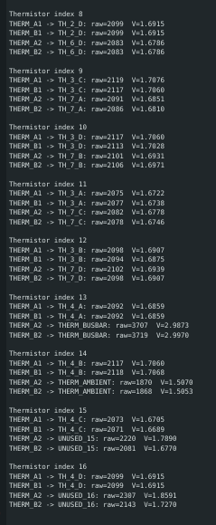

OCTAL Student Research Team
OCTAL is a student research team developing a heavy-lift firefighting octocopter platform.
My work focuses on STM32-based battery-management firmware: sensor bring-up, per-cell voltage monitoring, thermistor acquisition, pack-voltage calculation, early BMS fault/state logic, and current-sensing integration.

BMS bring-up setup used to validate communication, sensing, and early fault-handling behavior on the board.
Overview
As part of the OCTAL Student Research Team, I work on embedded battery-monitoring and protection firmware for a heavy-lift firefighting drone platform. My work has focused on building the firmware foundation needed for the battery-management system to sense pack conditions reliably and respond when readings move outside safe operating limits.
This project sits at the hardware-firmware boundary. I first brought up the sensing paths for cell voltages and thermistors, then extended that work into early BMS behavior by adding threshold checks, a fault bitmask, and IDLE/FAULTED state logic. Current work is focused on bringing up current measurement and validating the conversion path from raw readings to usable pack-current data.
My Contributions
- Modified and debugged STM32 firmware for battery-monitoring bring-up on the OCTAL BMS board.
- Brought up SPI communication with the battery-monitoring path and verified valid register readback behavior.
- Implemented per-cell voltage readout and pack-voltage summation from battery-monitor IC register data.
- Traced the thermistor sensing path from schematics and implemented multiplexed thermistor readout using STM32-controlled MAX14661 muxes and onboard ADC measurement.
- Added thermistor voltage-to-temperature conversion using the transfer function supplied by the hardware team.
- Implemented early BMS fault detection for undervoltage, overvoltage, undertemperature, overtemperature, mux faults, PEC faults, and ADBMS communication faults.
- Built early BMS state logic that continuously monitors readings in IDLE and transitions to FAULTED when unsafe conditions are detected.
- Structured firmware outputs around system CAN message definitions to support broader integration with the drone electrical architecture.
- Ongoing: bringing up current sensing, debugging conversion behavior, and validating pack-current interpretation against expected hardware behavior.
Technical Highlights
A major part of this work was establishing reliable communication between an STM32 microcontroller and the battery-monitoring path over SPI. Before higher-level BMS behavior could be trusted, I had to verify that register reads were valid, that returned values were physically meaningful, and that the battery-monitor interface behaved consistently on real hardware.
On the voltage-sensing side, I implemented firmware to read per-cell voltages from the battery monitor and calculate overall pack voltage by summing the cell measurements. This made it possible to track both individual cell behavior and full-pack voltage from the firmware layer.
I also implemented the thermistor sensing path by following the hardware architecture from the schematics. The thermistor network is routed through MAX14661 analog multiplexers controlled over I2C, with the selected outputs measured by STM32 ADC pins. I added the mux-control logic, thermistor scanning, voltage conversion, and voltage-to-temperature conversion needed to turn raw ADC values into usable temperature data.
After the sensing paths were validated, I extended the firmware into an early BMS monitor. The board continuously evaluates minimum and maximum cell voltage and temperature against operating thresholds, sets fault bits when unsafe conditions are detected, and transitions from IDLE to FAULTED when the pack moves outside allowed operating conditions.
Current work is focused on current sensing, which has required debugging the conversion path from raw measurements to interpreted pack current. That has meant separating basic readback from valid physical interpretation and checking whether unexpected values come from hardware, scaling, sign conventions, or firmware-side conversion logic.

Serial output showing successful per-cell voltage readback through the battery-monitor interface.

Thermistor acquisition path using I2C-controlled muxes, STM32 ADC inputs, and firmware-side temperature conversion.
Challenges
The hardest part of the project has been debugging at the hardware-firmware boundary. During bring-up, incorrect behavior can come from SPI configuration, I2C addressing, mux selection logic, ADC interpretation, board state, or missing physical inputs, so each issue has to be narrowed down carefully rather than treated like a simple software bug.
Another challenge has been separating “communication works” from “measurement is valid.” For voltage, thermistor, and now current sensing, it has been important to verify not only that interfaces respond, but that the returned values match the expected electrical behavior of the actual hardware path.
Tools and Skills
Tools: STM32, Embedded C/C++, Arduino IDE, Multimeter, Serial Debug, Schematics/Datasheets
Skills: SPI, I2C, ADC Readout, CAN Message Integration, Embedded Firmware, Battery Monitoring, Thermistor Sensing, Current-Sensing Bring-Up, Fault Bitmask Logic, State Machines, Board Bring-Up, Datasheet-Driven Debugging, Hardware/Firmware Integration
Project Status
This project is ongoing. I have completed bring-up for cell-voltage and thermistor monitoring and added early BMS protection logic for voltage and temperature faults. Current work is focused on current-sensing validation, including debugging conversion behavior and making sure interpreted pack-current values match expected hardware behavior before expanding the BMS further.